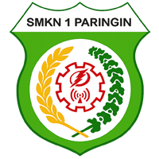

Sistem IntegrasiGerakan Disiplin dan Pembinaan
Aplikasi ini hanya dapat digunakan setelah diinstal ke perangkat Anda.
Memeriksa status aplikasi...
Pengguna iOS: Tekan ikon "Share" di bawah, lalu pilih "Add to Home Screen".